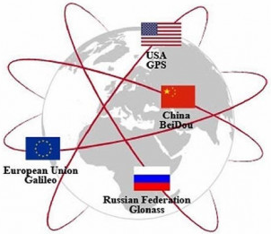

Le Pentagone imagine un système de localisation géographique composé d'une constellation de satellites en orbite autour de la Terre.
Financement et développement du GPS par le département de la Défense des Etats-Unis pour un usage strictement militaire.
Le premier satellite pour le GPS est lancé.
Le système est complétement opérationnel avec 28 satellites en orbite quasi-circulaires autour de la Terre.
Le système de géolocalisation Russe GLONASS devient opérationnel.
Démarrage de projet européen Galileo.
Le système de géolocalisation Chinois Beidou également nommé COMPASS devient opérationnel.
Apparition d'aide à la navigation couplée avec un GPS.
Le système Galileo devient opérationnel.